Основы композиции в дизайне
Что такое композиция?
В любом виде искусства ключевую роль играет правильное расположение элементов произведения, позволяющее наиболее точно передать идею этого произведения. То есть выделить ключевые сюжетные линии, передать необходимое настроение и соблюсти при этом гармонию. Композиция (от латинского compositio) и является соединением (сочетанием) этих элементов в единое целое.
Композиция – это расположение и сочетание объектов на изображении.
Геометрический и композиционный центр
Мы строим композицию на плоскости. Будь то фотография, лист бумаги или монитор компьютера. Если через эту плоскость провести две диагональные линии, точка их пересечения укажет на геометрический центр нашей будущей композиции. Любой предмет, вписанный в этот центр, будет чувствовать себя вполне уверенно.
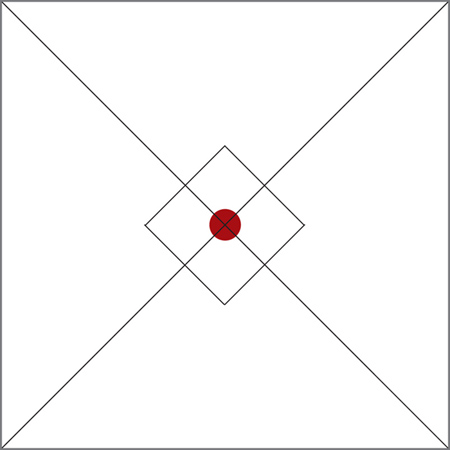Композиционный центр служит для фокусировки внимания зрителя на деталях композиции. В фотографии, живописи и рисунке, как правило, выделяются сюжетно-композиционные центры. То есть, в композиционном центре находится основной сюжет произведения.
Композиционный центр и геометрический центр композиции могут не совпадать. Композиционных центров в композиции может быть несколько, в то время, как геометрический центр один.
Композиционный центр может быть выделен:
- Контрастом света и тени;
- Контрастом цвета;
- Размером;
- Формой
Основные понятия и правила композиции
Диагональные линии в композиции:
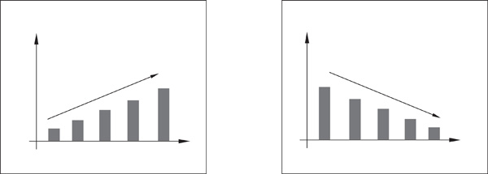График на рисунке слева означает рост. График на рисунке справа означает падение. Так уж сложилось. И, соответственно, в композиции диагональная линия, проведенная от левого нижнего угла к правому верхнему воспринимается лучше, чем линия, проведенная от левого верхнего угла к правому нижнему.
Открытая композиция, в которой направления линий исходят от центра, дает нам возможность продолжить мысленно картину и увести ее за рамки плоскости. Она подходит для передачи открытого пространства, движения.
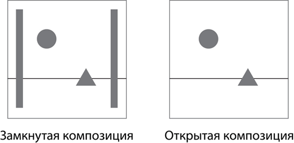Правило золотого сечения
Гармония - это слаженность. Единое целое, в котором все элементы дополняют друг друга. Некий единый механизм. Нет ничего более гармоничного, чем сама природа. Поэтому и понимание гармонии приходит к нам от нее. А в природе огромное количество зрительных образов подчиняется двум правилам: симметрии и правилу золотого сечения.
Что такое симметрия понятно. А что такое золотое сечение?
Золотое сечение можно получить, если разделить отрезок на две неравные части таким образом, чтобы отношение всего отрезка к большей части равнялось отношению большей части отрезка к меньшей. Это выглядит так:
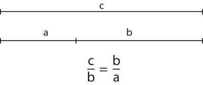Части этого отрезка примерно равны 5/8 и 3/8 от всего отрезка. То есть, по правилу золотого сечения зрительные центры в изображении будут располагаться так:
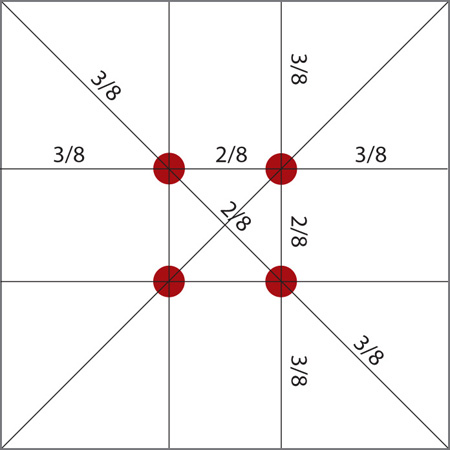Правило трех третей
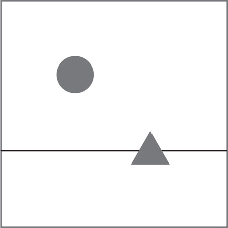В этом рисунке не соблюдено правило золотого сечения, но создается ощущение гармонии. Если разделить плоскость, на которой находятся наши геометрические фигуры на девять равных частей, мы увидим, что элементы расположены на точках пересечения разделяющих линий, а горизонтальная полоса совпадает с нижней разделительной линией. В этом случае действует правило трех третей. Это упрощенный вариант правила золотого сечения.
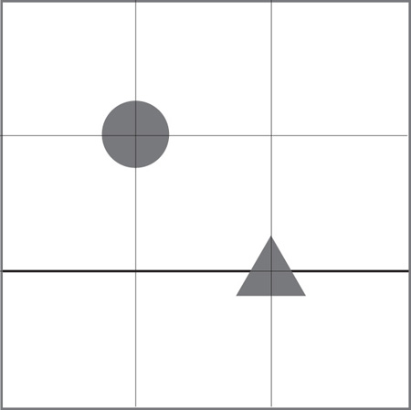Динамика и статика в изображении, движение, ритм
Динамичная композиция - композиция, при которой создается впечатление движения и внутренней динамики.
Статичная композиция (статика в композиции) - создает впечатление неподвижности.
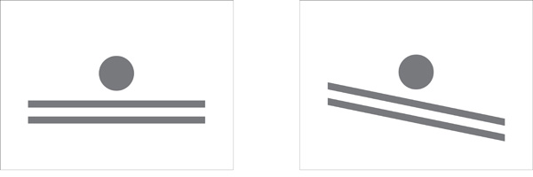Изображение слева выглядит статичным. На картинке справа создается иллюзия движения. Почему? Потому что мы прекрасно знаем из своего опыта, что будет с круглым предметом, если наклонить поверхность, на которой он находится. И воспринимаем этот предмет даже на картинке движущимся.
Таким образом, для передачи движения в композиции можно использовать диагональные линии.
Так же можно передать движение, оставив свободное пространство перед движущимся объектом, чтобы наше воображение могло продолжить это движение.
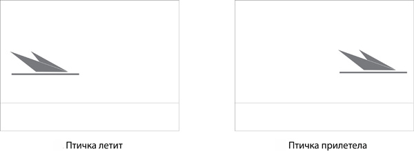Статика в композиции достигается отсутствием диагональных линий, свободного места перед объектом и наличием вертикальных линий.
Ритм - один из ключевых моментов в искусстве. Он может сделать композицию спокойной или нервной, агрессивной или умиротворяющей. Ритм обусловлен повторением.
Ритм в изобразительном искусстве может создаваться повторением цвета, объектов, пятен света и тени.
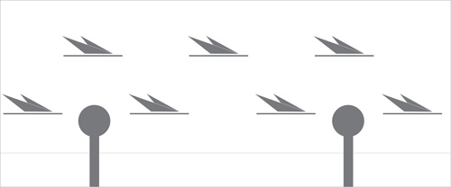Симметрия и асимметрия в композиции, достижение равновесия
Симметрия:
В природе большое количество зрительных образов подчиняется закону симметрии. Именно поэтому симметрия легко воспринимается нами и в композиции. В изобразительном искусстве симметрия достигается таким расположением объектов, что одна часть композиции, как будто являются зеркальным отражением другой. Ось симметрии проходит через геометрический центр. Симметричная композиция служит для передачи покоя, устойчивости, надежности, иногда, величества. Однако создавать изображение абсолютно симметричным не стоит. Ведь в природе не бывает ничего идеального.
Симметрия - это самый простой способ добиться равновесия в композиции. Однако, не единственный.
Асимметрия, достижение равновесия
Чтобы понять, что такое равновесие можно представить механические весы.
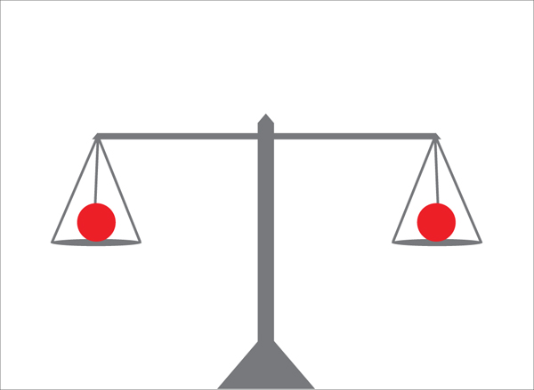В данном случае работает закон симметрии. Слева и справа на весах на одинаковом расстоянии симметрично расположены два предмета одинаковой формы и размера. Они создают равновесие.
Асимметрия нарушит это равновесие. И если один из объектов будет больше, то он по-просту перевесит меньший.
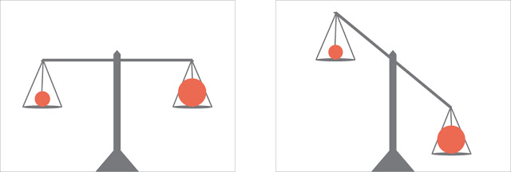Однако возможно уравновесить эти объекты, добавив в композицию что-нибудь, в качестве противовеса. Асимметрия при этом сохранится:
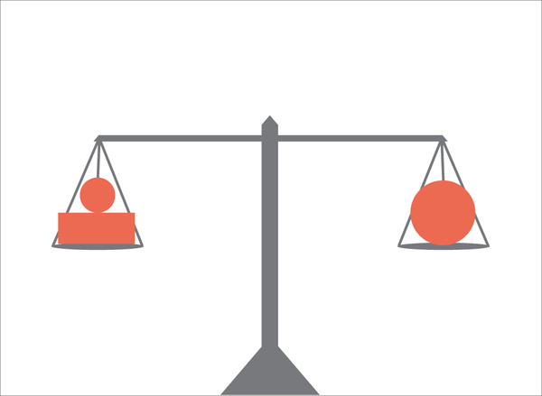Так же добиться равновесия при асимметрии можно будет, перевесив больший предмет ближе к центру:
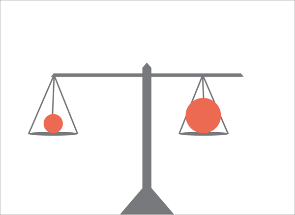Достижение равновесия является одним из самых значимых этапов при построении ассиметричной композиции. Равновесие может достигаться противопоставлением размеров, форм пятен цвета и тени.
Заключение
Правила композиции не являются обязательными для соблюдения. Даже наоборот. Некоторые правила противоречат один другому. Однако, прежде чем нарушать какое-либо правило, его надо знать и уметь им пользоваться. Помните, если Вы нарушаете правила, Вы должны четко осознавать, для чего Вы это делаете.